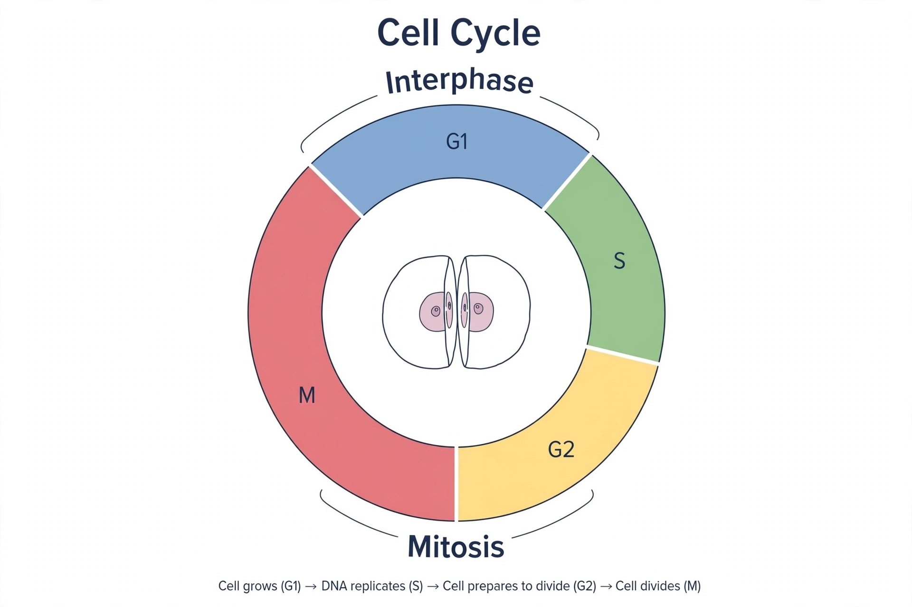

Cell cycleThe cell cycle, or cell-division cycle, is the series of events that take place in a cell that cause it to divide into two daughter cells. In eukaryotes it comprises interphase — G1 (growth), S (DNA synthesis) and G2 (preparation) — and the mitotic (M) phase, ending in cytokinesis. Cells may exit to a quiescent G0 state.
Progression is driven by cyclin-dependent kinases (CDKs) activated by cyclins whose levels oscillate. Checkpoints — at G1/S, G2/M and the spindle assembly checkpoint — verify DNA integrity and proper chromosome attachment, involving proteins such as p53 and Rb. Leland Hartwell, Tim Hunt and Paul Nurse won the 2001 Nobel Prize for discovering these regulators in yeast and sea urchins.
Loss of cell-cycle control is a hallmark of cancer: oncogene activation and tumour-suppressor loss let cells divide unchecked. Many chemotherapy drugs target dividing cells at specific phases.